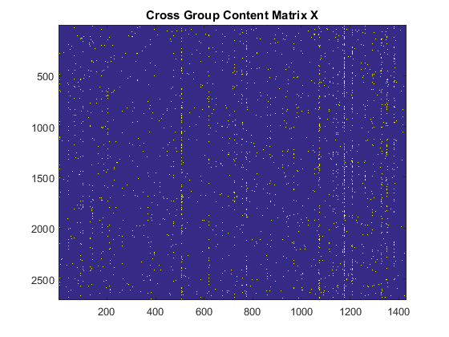
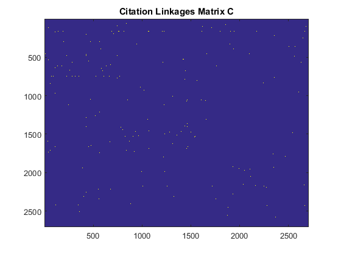

Contents
Exemplary script for running the nonlinear linkage model
initialize the script
clear classes
clear all
close all
clc
rng(213);
datasets = {'cora', 'citeseer', 'cornell', 'texas', 'washington', 'wisconsin'};
Warning: Objects of 'onCleanup' class exist. Cannot clear this class or any of
its superclasses.
loading the relevent variables/matrices to the workspace
processing_data_id = 1;
load(['../data/' datasets{processing_data_id} '.mat'], ...
'C', 'X', 'webpage_ids', 'webpage_classnames');
C = C | C.';
Split the dataset into training/testing sets
sub_sampling_ratio = 0.001;
M = size(C, 1);
total_linkages = M * (M - 1) / 2;
nb_training_samples = floor(sub_sampling_ratio * total_linkages);
C = triu(C);
C = C - diag(diag(C));
[row_idx, column_idx] = find(C > 0);
nb_positives = length(row_idx);
nb_testing_samples = nb_positives - nb_training_samples;
disp(['known positive linkages: #' num2str(nb_positives) ' ' ...
num2str(100*nb_positives/total_linkages) '%']);
disp(['training linkages: #' num2str(nb_training_samples) ' ' ...
num2str(100*nb_training_samples/total_linkages) '%']);
disp(['testing linkages: #' num2str(nb_testing_samples) ' ' ...
num2str(100*nb_testing_samples/total_linkages) '%']);
idx_permutation = randperm(length(row_idx));
idx_train = idx_permutation(1 : nb_training_samples);
idx_test = idx_permutation(nb_training_samples + 1 : end);
row_idx_train = row_idx(idx_train);
column_idx_train = column_idx(idx_train);
row_idx_test = row_idx(idx_test);
column_idx_test = column_idx(idx_test);
C = sparse(row_idx_train, column_idx_train, ...
ones(nb_training_samples, 1), M, M);
C = C | C.';
C = C - diag(diag(C));
known positive linkages: #5278 0.144%
training linkages: #3665 0.099992%
testing linkages: #1613 0.044008%
Visualize the matrix strcuture
figure
imagesc(X);
title('Cross Group Content Matrix X');
figure
imagesc(C);
title('Citation Linkages Matrix C');
 
Run the nonlinear model
Z = nla(X, C, 10, 'euclidean');
Warning: solutions can not be found for dimensionality of 10, using the maximum
embedding dimension instead
138.4338
292.8849
295.0921
301.5455
487.1312
511.8420
Evaluation using classification error rate
Z = normc(Z);
lz = categorical(webpage_classnames);
Mdl = fitcknn(Z, lz, 'NumNeighbors', 1, 'Standardize', 1, ...
'Distance', 'cosine');
Mdl.ClassNames
Mdl.Prior
rloss = resubLoss(Mdl);
CVMdl = crossval(Mdl);
kloss = kfoldLoss(CVMdl);
disp(['The resubstitution loss for nearest neighbour classifier: ' num2str(rloss)]);
disp(['The classification error rate: ' num2str(kloss)]);
ans =
Case_Based
Genetic_Algorithms
Neural_Networks
Probabilistic_Methods
Reinforcement_Learning
Rule_Learning
Theory
ans =
0.1100 0.1544 0.3021 0.1573 0.0801 0.0665 0.1296
The resubstitution loss for nearest neighbour classifier: 0.089365
The classification error rate: 0.50148
Mean Reciprocal Rank Evaluation
MRR = 0;
MR = 0;
C = triu(C);
C = C - diag(diag(C));
[rowidx, columnidx] = find(C > 0);
DistMat = squareform(pdist(Z));
[~, idx] = sort(DistMat, 'ascend');
for ii = 1 : length(rowidx)
rank_train = find(idx(:, rowidx(ii)) == columnidx(ii)) - 1;
MRR = MRR + 1/rank_train;
MR = MR + rank_train;
end
MRR = MRR / length(rowidx);
MR = MR / length(rowidx);
disp(['Training set Mean Rank: ' num2str(MR)]);
disp(['Training set Mean Reciprocal Rank: ' num2str(MRR)]);
MRR = 0;
MR = 0;
for ii = 1 : length(row_idx_test)
rank_test = find(idx(:, row_idx_test(ii)) == column_idx_test(ii)) -1;
MRR = MRR + 1/rank_test;
MR = MR + rank_test;
end
MRR = MRR / length(rowidx);
MR = MR / length(rowidx);
disp(['Testing set Mean Rank: ' num2str(MR)]);
disp(['Testing set Mean Reciprocal Rank: ' num2str(MRR)]);
Training set Mean Rank: 1561.8641
Training set Mean Reciprocal Rank: 0.024314
Testing set Mean Rank: 505.5853
Testing set Mean Reciprocal Rank: 0.015812